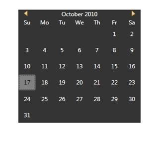

Skins can be applied to the control by setting the VisualStyle property defined in the Skin Storage class. Set the VisualStyle property to the corresponding theme. This property can be set either in XAML or in C#.
Table 77: Visual Style Property
|
Property |
Description |
Type |
Data Type |
Reference links |
|
VisualStyle |
Used to set Skins for the controls. The Built-In-Skins are as follows. · Office2003 · Office2007Blue · Office2007Black · Office2007Silver · ShinyRed · Blend · ShinyBlue · SyncOrange · VS2010 · Office2010Blue · Office2010Black · Office2010Silver · Metro |
Attached Property |
String
|
|
The following code snippet explains how to set the VisualStyle property in XAML.
1. Add the following namespace in the sample.
|
[XAML] xmlns:syncfusion="http://schemas.syncfusion.com/wpf"
|
2. Set the VisualStyle property for the control as shown below.
|
[XAML] <syncfusion:CalendarEdit syncfusion:SkinStorage.VisualStyle="Blend"></syncfusion:CalendarEdit> |
You can also set the VisualStyle property in C# using SetVisualStyle.
The following code snippet explains how to set the VisualStyle property in C#.
1. Name the control using the Name attribute.
|
[XAML] <syncfusion:CalendarEdit Name="calendar"></syncfusion:CalendarEdit> |
2. Add the following line in code behind file.
|
[C#] SkinStorage.SetVisualStyle(calendar, "Blend"); |
The output is displayed as shown below.

Figure 950 : Calendar with Blend Style